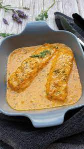

Salomon
Die Lachs-Sahnesoße wird mit Nudeln zu einem absoluten Leckerschmecker-Gericht. Mit Lachsfilet und Tagliatelle überzeugt die schnelle Kombi auch jeden Gast!
Ingredients
- 500 g Lachsfilet ohne Haut (tiefgekühlt oder frisch)
- 1 EL Butter
- 400 g Bandnudel
- Salz
- 250 mlSahne (30 % Fett)
- 2 EL Tomatenmark (2-fach konzentriert)
- 2 TL gekörnte Gemüsebrühe
- 100 ml Wasser
- frisch gemahlener Pfeffer
- 2 EL Olivenöl
- Lachsfilet gegebenenfalls antauen lassen und in ca. 2 cm große Würfel schneiden. Butter in einer Pfanne zerlassen und die Lachswürfel rundherum 2-3 Minuten anbraten. Bandnudeln nach Packungsanweisung in Salzwasser garen, abgießen und warmstellen.
- Sahne mit Tomatenmark, Gemüsebrühe und Wasser verrühren, zum Lachs in die Pfanne geben, aufkochen und mit Salz und Pfeffer abschmecken.
- Nudeln mit Olivenöl vermengen, auf die Teller verteilen und mit Lachs-Sahnesoße – nach Wunsch mit frischer Petersilie bestreut – servieren. Guten Appetit!